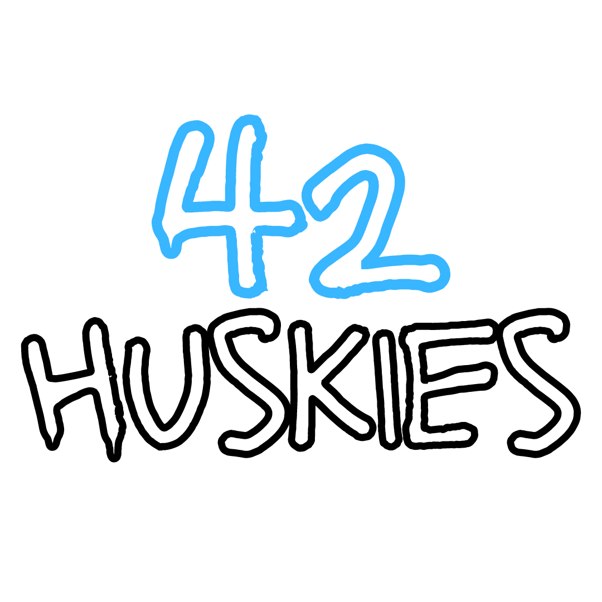
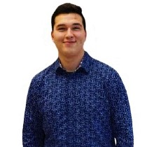
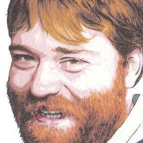

About Us
42 Huskies is all about winning memories. We play games to connect with others, to fight together, while aiming for a similar goal, to win lasting memories, and to create everlasting legacies.
The number "42" is a dedication to one of our founders (Naol) late father, Mieso K. Denko, as he passed away with liver cancer in 2010 at the age of 42.
He left a memorable impact in the field of computer science, and was appreciated among peers and faculty.
The institution he was a part of (University of Guelph) formed a scholarship named “Mieso Denko Memorial” as an honor to his life’s work in research and education.
The word "Huskies" is what connects are founders. They met and became roommates at Saint Mary’s University, as they were recruited to play football for the Saint Mary’s Huskies.
Hence, made them decide to use "Huskies" as their mascot and team name.
Our aim is to foster a collective of like-minded individuals who seek: to win championships, to establish themselves and our brand, and to make phenomenal memories.
Because, at the end of the day...
It’s all about winning memories.
Team
Naol M. Denko
Co-Founder & Chief Executive Officer
Naol brings business experience as he previously founded a fitness startup that focused on using AI to deliver personalized workout/nutrition programs and a management agency that focused on managing artists and producers.
He might have business prowess, but when it comes to gaming, he leaves that to Kyeen. However, Naol grew up playing Halo, Pokemon, and sport games.
While not working, Naol likes to produce music and watch Netflix.


Kyeen Augustine
Co-Founder & Chief Gaming Officer
Kyeen is a long-time gamer. He started playing games when he was 3 years old, but delved into games more when he got Halo 2 for Xbox.
Fast forward to now, he has played Fortnite since its inception, and continues to play the game whenever he has a chance to.
As the Chief Gaming Officer, Kyeen will be managing the players, and act as the Team Captain for all Fortnite multiplayer events.
When not gaming, Kyeen likes to travel and fish lobster.
Udaibeer Sangha
Strategy & Operations Lead
Udai is a smart, business-minded individual. He graduated from Schulich School of Business, one of the top business schools in Canada, and currently works as a Management Consultant at PwC (PricewaterhouseCoopers) in Toronto.
As the Strategy & Operations Lead, he will be focusing on developing the overall strategy of our eSports team, and making sure our operations are functional and profitable.
Besides working, Udai likes to play pool with friends.

David Garrard
Co-Owner & Advisor
David comes with 15+ years of tech & business experience. So far in his career, he was the Chief Technology Officer for Last Call Analytics, which eventually got acquired from Ample Organics; he was the
Vice President of Software for InsightAction Inc, in which he oversaw a customer-focused team of database, systems and user experience specialists; now he is currently a Strategy Technology Consultant for JUDI.AI, a private fintech company based in Vancouver, British Columbia.
David is also the Founder of Squarify, a fast-growing results-driven software consultancy company based in Toronto, Ontario.
Before starting his career, David graduated from the University of Waterloo with a Bachelor's Degree in Economics. As Co-Owner & Advisor, David will advise and introduce us to people in the business realm to enhance our team. In his spare time, David often watches curling or sailing.
Go Back